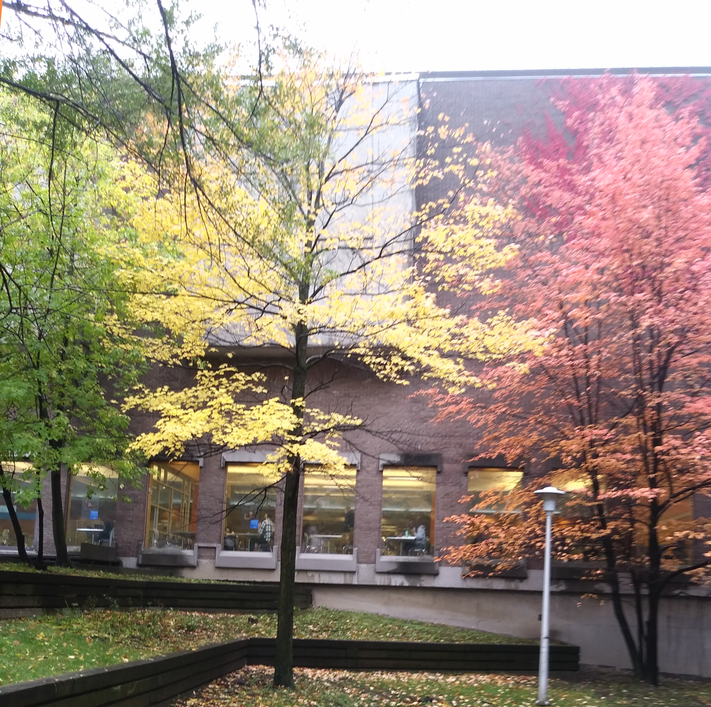

Vivre hors campus
Pour une chambre en colocation dans un appartement, prévoyez un budget d’environ 450 $ par mois, ou un peu plus si vous décidez de louer votre propre studio. Les baux sont de 12 mois et comprennent parfois le chauffage, l’eau et l’électricité. Et avant de signer quoi que ce soit, vérifiez que le logement, charges comprises, corresponde à votre budget étudiant! Faites des simulations.
« Entamez votre recherche au printemps pour obtenir les meilleures offres. N’hésitez pas à réserver à l’avance par téléphone votre logement, en demandant des photos », conseille Sébastien, diplômé français à l’Université de Montréal.
Si vous préférez chercher sur place, prévoyez d’arriver « au moins trois semaines avant le début des cours », suggère Sébastien. « Afin d’éviter d’acheter des meubles ou des appareils ménagers, optez pour les logements meublés ou semi-meublés.
Montréal, une ville étudiante
Selon un cabinet de relations publiques qui sondé l'opinion de quelque 50 000 étudiants, Montréal remporte la palme mondiale en ce qui a trait à l'expérience étudiante, offrant selon les étudiants sondés la meilleure expérience universitaire au monde. La métropole québécoise se présente par ailleurs comme la « capitale culturelle » du Canada.
Le classement des 100 meilleures villes étudiantes du monde est en fonction de six critères :
- l'expérience étudiante
- le bassin d'étudiants
- le classement de ses universités
- la désirabilité
- l'activité des employeurs
- le coût de la vie et des études
L'Université de Montréal, une communauté
L'université de Montréal (UdeM) est l'une des cinq grandes universités du Canada (la deuxième en terme du nombre d'étudiants) et parallèlement la plus importante dans tout le monde francophone pour le nombre d'étudiants ainsi que pour la recherche.
L'UdeM est classée parmi les meilleures universités au monde et bénéficie d'une grande réputation en tant que l'une des meilleures institutions post-secondaires dans le monde francophone. Elle est reconnue parmi les meilleures institutions d'enseignement supérieur dans le monde francophone en se classant 90ème meilleure université mondiale selon le Times Higher Education.
Se trouver un logement
Logement hors campus
Consultez la banque de logements pour trouver l’appartement de vos rêves, que vous cherchiez autour des campus de Montréal, de Laval ou de Saint-Hyacinthe.
Résidences de l’UdeM
Jusqu’à 1120 studios sont offerts sur le site des Résidences de l’Université de Montréal.
Trucs et astuces
Que vous en soyez à votre premier ou cinquième appartement à Montréal, découvrez tous les trucs et astuces en lien avec les questions du logement dans la métropole.
À retenir
Organisation du temps et ponctualité
Les Québécois gèrent leur temps à la manière nord-américaine. Ils accordent beaucoup d’importance aux agendas et aux programmes préétablis. Ils organisent leurs activités selon un horaire précis et fixe. Ils perçoivent le temps de façon linéaire, se fixant des priorités et ne faisant généralement qu’une activité à la fois. Ils planifient et divisent leur temps selon les différentes activités à faire. Les Québécois considèrent le temps comme une ressource précieuse. Vous entendrez les expressions «le temps c’est de l’argent», «perdre son temps» et «gagner du temps».
Par conséquent, les Québécois prennent leurs engagements liés au temps très au sérieux. Ils se présentent à l’heure à leurs cours et à leurs réunions. Ils arrivent même de 5 à 10 minutes à l’avance pour des rendez-vous d’affaires. Les retards laissent souvent une mauvaise impression. Ils sont considérés comme un manque de respect. Le respect des délais et de ses engagements, comme remettre sa partie d’un travail d’équipe à temps, est très valorisé.
Importance de l’écrit
Les Québécois accordent plus d’importance aux informations écrites qu’aux informations verbales. Un contrat, par exemple, n’est officiel que s’il est dûment rédigé. Les dépliants, les brochures et les tableaux d’affichage sont par ailleurs beaucoup utilisés pour transmettre des renseignements ou des indications. Par conséquent, il est important que les nouveaux étudiants étrangers lisent les informations qui leur sont transmises.
Statuts sociaux
Au Québec, le phénomène de classes sociales marque peu les relations interpersonnelles. Il est possible pour une personne issue d’un milieu plus modeste de grimper les échelons, puisque les Québécois partent du principe selon lequel ce qu’une personne fait et comment elle se comporte priment davantage que le milieu social ou le pays d’où elle vient. Dans la plupart des milieux, on privilégiera l’égalité des personnes, peu importe leur classe sociale. Toutefois, les liens sociaux et d’amitié restent généralement plus horizontaux (même statut social) que verticaux.